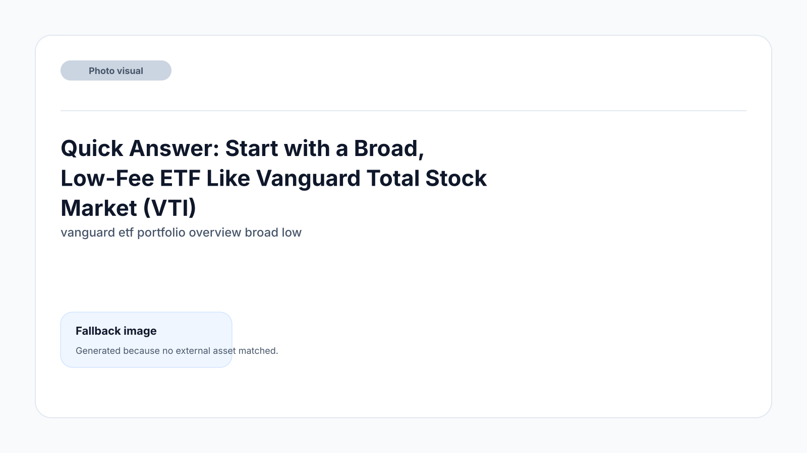
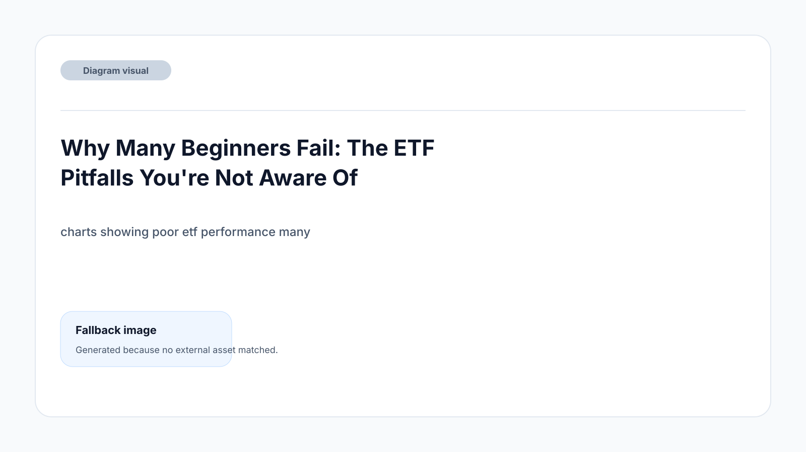
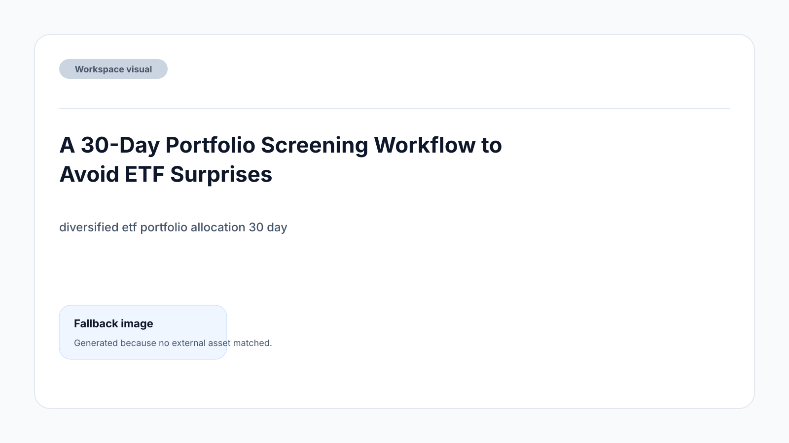
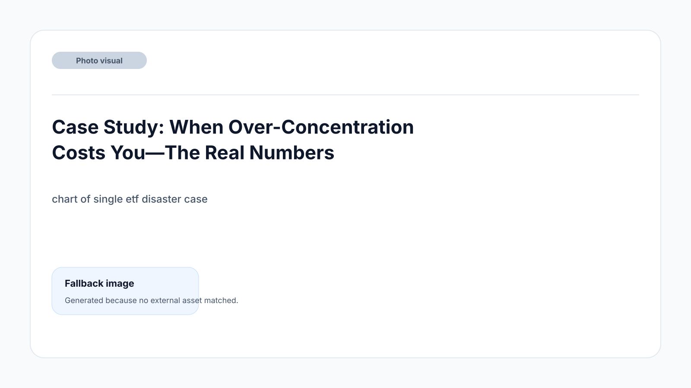
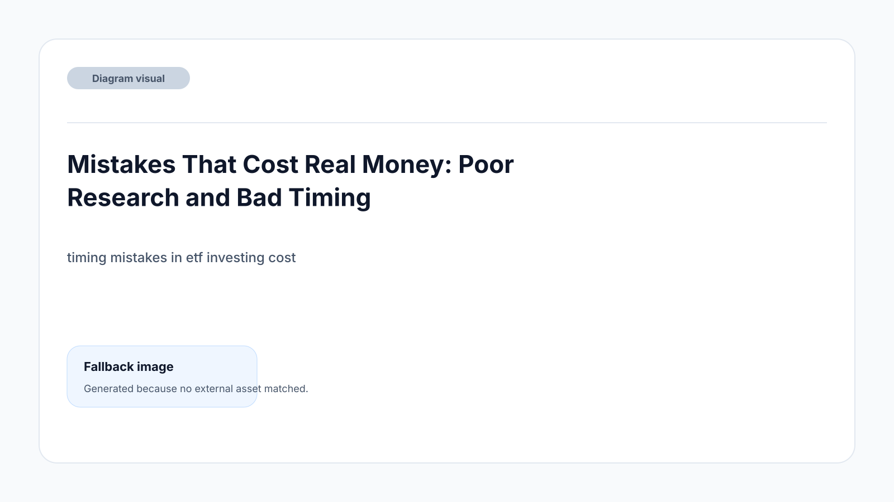

TL;DR
• Beginners, avoid niche and high-fee ETFs—start with low-cost, broad-market funds like VTI (US) or EUNL (EU) • Diversify: Aim for 50% domestic, 30% international, 20% bonds • Watch expense ratios—keep your weighted fee under 0.15% • Check holdings monthly and don’t chase hot trends • Use resources like ETF.com and JustETF to research before buying
Quick Answer: Start with a Broad, Low-Fee ETF Like Vanguard Total Stock Market (VTI)

If you’re new to ETFs, your first step should be to put $500–$1,000 into a broad-market, low-fee ETF such as Vanguard Total Stock Market ETF (VTI) for US investors or iShares Core MSCI World UCITS ETF (EUNL) for EU investors.
Both funds offer diversified exposure to hundreds or thousands of companies, minimizing single-stock risk while keeping fees below 0.10%. Start by setting up an automatic monthly investment, even if it’s just $50–$100.
Avoid niche or leveraged products until you have more experience.
Why Many Beginners Fail: The ETF Pitfalls You're Not Aware Of

It’s easy to assume all ETFs are safe and diversified, but many beginners make critical mistakes that erode long-term gains. Underestimating fees is a common one: even 0.50% annually can cut thousands from your future returns. Another trap is believing buying multiple ETFs always means true diversification. Many ETFs overlap, so doubling up often means you’re still exposed to the same sectors.
For example, if you own both the SPDR S&P 500 ETF (SPY) and iShares Core S&P 500 ETF (IVV), you’re not diversified—you’re simply holding more of the same. Overlapping holdings can set up a false sense of security.
Risk isn’t just about price swings; it’s also about making the mistake of concentrating too much in hot sectors (like tech growth in 2021), only to be hit hard when trends reverse. Beginners often chase recent performance or buy ‘thematic’ funds without understanding what’s inside.
One more pitfall: ignoring your time horizon. If you’re investing for less than five years, market swings can wreck short-term goals. For true long-term growth, focus on broad, low-cost, diversified funds and tune out market noise.
A 30-Day Portfolio Screening Workflow to Avoid ETF Surprises

Don’t get caught by high fees or false diversification. Use this repeatable workflow every month: 1. Check your broker’s dashboard for your current ETF holdings. List tickers and weighting. 2. Compare each ETF’s expense ratio. Flag any above 0.20% for further review. 3. Verify the top 10 holdings in each ETF using official fund provider pages.
Look for overlap. 4. Rebalance: Aim for 50% domestic ETFs (e.g., VTI or SXR8), 30% international ETFs (e.g., EFA for US, EUNL for EU), and 20% broad bond ETFs (e.g., BND or AGGH). Adjust if overweight in any area. 5. Review your ETF watchlist. Add only after confirming it fills a true diversification gap—avoid adding just because of recent performance. 6. Every 30 days, do a quick ‘fee sweep’ to ensure your total weighted average fee remains under 0.15%.
If you want to go deeper, check out "How to Build an ETF Allocation for Beginners" for a step-by-step alternative.
Documentation is critical: keep a log of all allocation changes and your reasoning. That way you avoid impulsive mistakes.
Case Study: When Over-Concentration Costs You—The Real Numbers

Consider Sarah, a US investor who felt confident buying $5,000 of the ARK Innovation ETF (ARKK) in early 2021. She skipped diversification, convinced by the fund’s past returns and media buzz. When tech volatility hit, ARKK dropped over 60% by mid-2022.
Had she split her $5,000 into 50% Vanguard Total Stock Market ETF (VTI), 30% iShares MSCI EAFE ETF (EFA), and 20% Vanguard Total Bond Market ETF (BND), her loss would have been closer to 13%, not 60%. Worse, she sold at a panic low, cementing her losses. This type of mistake isn’t rare for beginners who ignore allocation principles.
Meanwhile, in the EU, a similar scenario played out with new investors buying €4,000 of iShares Global Clean Energy UCITS ETF (INRG) at a peak, only to watch it fall more than 45% over the next year. Track these scenarios when researching new ideas—never assume a hot sector ETF will keep climbing.
Diversification is not just theory: it’s the difference between a bruising setback and a manageable dip.
Mistakes That Cost Real Money: Poor Research and Bad Timing

Beginners often buy ETFs after a strong rally, thinking more gains will follow. This is a classic timing mistake. Inexperienced investors poured into the Invesco QQQ Trust (QQQ) and other tech-heavy ETFs in late 2021, only to see a 30%+ drawdown the next year.
Another frequent mistake: relying only on headlines without reviewing actual ETF holdings or understanding strategy. For example, buying "dividend" ETFs like Global X SuperDividend (SDIV) for its high yield—without realizing its exposure to risky or declining companies—is a costly oversight. Here’s what tends to go wrong:
• Buying at market peak: Chasing the recent top because of FOMO, then holding through steep drops • Following trends blindly: Copying popular investments on social media without checking fundamentals or performance history • Skipping research: Ignoring the fine print about index methodology, liquidity, or geographic exposure
It pays to take 15 minutes to investigate the ETF’s factsheet, read available research, and check for concentration in one region or sector. Don’t rely on someone else’s "top pick."
It’s also smart to set a recurring reminder in your phone: review your portfolio's biggest ETF each month and question whether any single position has grown too large. Learning from others’ mistakes is a real time-saver.
Which Tools and Resources Actually Help Beginners Avoid ETF Pitfalls?
Start with ETF.com and Morningstar for US investors, and JustETF for EU markets. These tools let you review key stats before buying: expense ratio, top holdings, and past performance. For hands-on learning, consider ‘Bogleheads’ Guide to Investing’ or online courses from Coursera and Udemy focused on ‘ETF Investing for Beginners.’
Ignore tipster videos and social media ‘picks’ for now—they tend to push risky trades or high-fee products. Instead, focus on resources that teach you to compare ETFs directly.
If you have limited time, set one weekend per month to review your setup using these research sites. Most beginners should avoid sophisticated tools (like portfolio backtesting apps) at first, since these add complexity and can promote over-trading.
Bookmark our ETF checklist or our beginner ‘ETF vs. Mutual Fund’ comparison pieces to keep learning. Master the basics, and the right ETF tools will keep you out of trouble without information overload.
FAQ
What are ETFs and how do they work?
ETFs, or exchange-traded funds, are baskets of securities (like stocks or bonds) that you can buy and sell on stock exchanges. They offer instant diversification because each ETF holds many underlying assets, and they typically have lower fees compared to mutual funds. When you buy an ETF, you’re buying shares that track the value and performance of its holdings.
How can I choose the right ETFs for my portfolio?
Start by considering your investment goals and risk tolerance. Look for broad-market, low-cost ETFs such as VTI (US) or EUNL (EU) that align with your desired exposure. Compare expense ratios, check for overlap with your other holdings, and make sure the ETF fits your long-term strategy. Avoid niche or high-fee funds as a beginner.
Should I avoid thematic ETFs as a new investor?
Yes, most beginners should avoid thematic ETFs (those focused on specific trends or sectors) because they can be volatile and lack diversification. Stick with broader ETFs that reduce sector-specific risk until you have more experience and a larger portfolio.
How often should I review my ETF portfolio as a beginner?
A monthly review cycle is both realistic and effective. Once a month, check your holdings, rebalance as needed, and track expense ratios to ensure you maintain broad diversification and stay on target with your goals.
What is a reasonable fee to pay for an ETF?
Aim for an expense ratio below 0.15% whenever possible. Most high-quality, broad-market ETFs fall in this range. Paying more is rarely justified for beginners and will hurt your long-term returns.
This article is reviewed by investing editors for practical usefulness and updated regularly to reflect latest ETF trends and beginner best practices.
Next step
Use the article as a decision point, not just reading material. Your next system matters more than more browsing.
Search more articles
Find related tools, workflows, and guides.